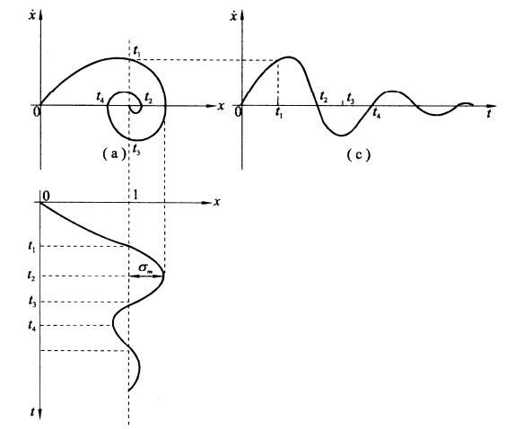
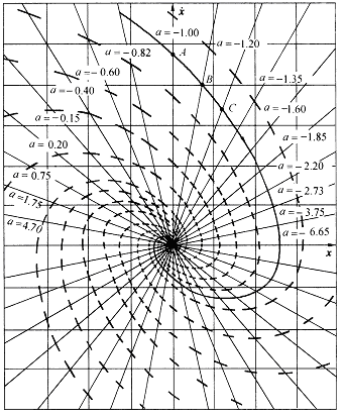
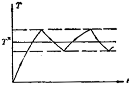
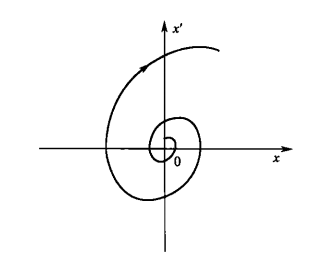
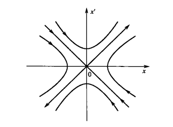
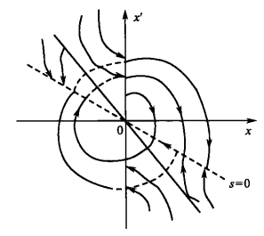
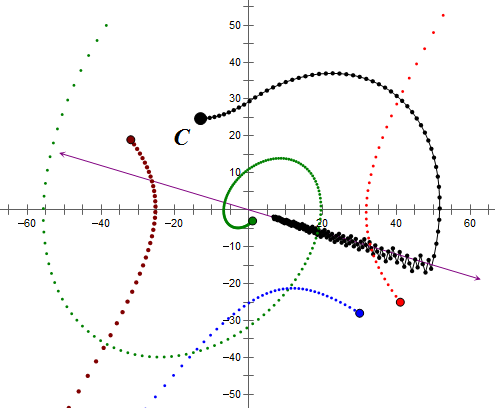
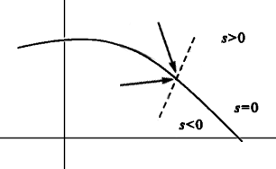
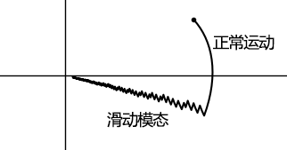

讲述滑模变结构控制的基础知识（只是将平时笔记本上记下的对应内容照搬过来）。
参考书籍：
《变结构控制理论基础》，高为炳；
《变结构控制系统》，姚琼芸等。
基础知识了解
相平面
相平面法是求解一、二阶线性或非线性系统的一种图解法，可用来分析系统的稳定性、平衡位置、时间响应、稳态精度以及初始条件和参数对系统运动的影响。
相平面与相轨迹
一个二阶系统常微分方程如下：
$$
{\ddot x}+f(x,{\dot x})=0
$$
其中，$f(x,{\dot x})$ 是 $x$ 和 ${\dot x}$ 的线性或非线性函数。在非全零初始条件 $(x_0,\; {\dot x_0})$ 或输入作用下，系统的运动可以用解析解 $x(t)$ 和 ${\dot x}(t)$ 描述。
取 $x$ 和 ${\dot x}$ 构成的坐标平面，称为相平面；当 $t$ 变化时，点 $(x(t),\; {\dot x}(t))$ 在相平面上的轨迹，称为相轨迹。相即是系统的状态的意思。如下图所示：

相轨迹性质
相轨迹的斜率
相轨迹在相平面上任意一点 $(x,\; {\dot x})$ 处的斜率为
$$
{\frac {d{\dot x}} {dx}}
= {d{\dot x}/dt \over dx/dt}
= {-f(x, \; {\dot x}) \over {\dot x}}
$$
当点 $(x,\; {\dot x})$ 满足 ${\dot x}$ 和 $f(x,\; {\dot x})$ 不同时为零时，则轨迹斜率就是一个确定的值（这里无穷大也作为一个确定的值），这样，最多只有一条轨迹通过该点。相轨迹的奇点
相轨迹奇点处有：
$$
{\frac {d{\dot x}} {dx}}
= {-f(x, \; {\dot x}) \over {\dot x}}
= {\frac 0 0}
$$
即相轨迹的斜率不确定，通过该点的相轨迹不止一条。这样的点是相轨迹的交点，称为奇点。显然，奇点只分布在相平面的 $x$ 轴上。由于在奇点处有 ${\ddot x} = {\dot x} = 0$，故奇点也称为平衡点。
相轨迹绘制
相轨迹的绘制方法有解析法和图解法两种。
解析法
解析法即是求解微分方程，得到 $x$ 和 ${\dot x}$ 的解析关系。图解法
等倾斜线法是图解法之一。
设置相轨迹上非奇点的斜率为 ${\alpha}$，即有：
$$
{\frac {d{\dot x}} {dx}}
= {-f(x, \; {\dot x}) \over {\dot x}}
= {\alpha}
$$
则通过化解后，可以得到等倾线方程：
$$
{\dot x}=g({\alpha})x
$$
其中，$g(\alpha)$ 为关于斜率 ${\alpha}$ 的表达式，也即等倾斜线的斜率。从某一点开始，如初始条件 $(x_0,\; {\dot x_0})$点，根据等倾斜线和相轨迹斜率方向，就可以逐渐的连出一条相轨迹，如下图所示。

传递函数
传递函数是系统输入与输出的拉氏变换之比：
$$
G(s) = \cfrac{X_o(s)}{X_i(s)}
$$
- $X_o(s)=0$的根为零点；
- $X_i(s)=0$的根为极点，且$X_i(s)=0$为系统特征方程。
状态空间方程
状态空间方程用于描述系统状态量$x$、输入量$u$、输出量$y$之间关系：
- 线性定常系统
$$
\begin{cases}
\dot{x} = Ax+Bu \\
y = Cx + Du
\end{cases}
$$
- 线性离散系统
$$
\begin{cases}
x(k+1) &= Gx(k) + Hu(k) \\
y(k) &= Cx(k) + Du(k)
\end{cases}
$$
- 线性时变系统
$$
\begin{cases}
\dot{x}(t) = A(t)x(t)+B(t)u(t) \\
y(t) = C(t)x(t) + D(t)u(t)
\end{cases}
$$
- 非线性系统
$$
\begin{cases}
\dot{x} &= f(x, u, t) \\
y(t) &= g(x, u, t)
\end{cases}
\quad
\begin{cases}
\dot{x}(t_{k+1}) &= f(x, u, t_k) \\
y(t_k) &= g(x, u, t_k)
\end{cases}
$$
变结构实例分析
继电系统
继电系统是一种比较简单的变结构系统。下面是一个二位式温度调节器的实例：
设要求某温箱的温度保持到 $ T^{\ast}=200^{\circ}C $，允许误差为 $ {\%}5 $。二位式调节原理如下：二位之一表示开启加热，另一是关闭加热自然降温或开启制冷。设现在温箱 $ 150^{\circ}C $，开位加温直到 $ 210^{\circ}C $，然后关位降温直到 $ 190^{\circ}C $，然后再开位加温，这样一直持继续下去，使温箱的温度 $ T $ 保持在给定温度 $ T^{\ast} $ 附近，误差不超过 $ {\%}5 $，温度变化如图所示。

二位式温度调节器是一个典型的变结构控制系统，也是一个最简单的变结构系统。
相平面轨迹分析
对如下系统为例：
$$
\begin{cases}
\ddot{x} = a\dot{x} + u, a > 0 \\
u = -\psi x
\end{cases}
$$
- 当$\psi = \alpha \, (\alpha > 0)$时，相轨迹为：

- 当$\psi = -\alpha \, (\alpha > 0)$时，相轨迹为：

- 当$\psi$为：
$$
\psi =
\begin{cases}
\alpha \, &, \, xs > 0 \\
-\alpha \, &, \, xs < 0 \\
& \,\,\,\, s = cx + \dot{x}
\end{cases}
$$

可以看到：
在$x=0$和$s=0$上会改变系统结构（即
变结构）；
在$s=0$上会沿着直线滑动到平衡点（即滑模）；
最终，通过在切换两个非稳定系统的输入$u$，却得到了一个稳定系统。
滑模变结构控制
广义上讲，在控制过程中，系统发生改变，则称为变结构系统；滑模变结构是其中的一种。
定义
下面是大家公认、已得到系统发展的滑模变结构控制系统的定义（更确切地说一种综合方法）：
对于非线性结构系统：
$$
\dot{x} = f(x,u,t) \, , \, x \in R^n \, , \, u \in R^m \, , \, t \in R
$$
确定切换函数向量：
$$
s(x) \, , \, s \in R^m
$$
并录求变结构控制：
$$
u_i(x) =
\begin{cases}
u_i^+(x) \, , \, s_i(x) > 0 \\
u_i^-(x) \, , \, s_i(x) < 0 \, , \, (u_i^+(x) \neq u_i^-(x))
\end{cases}
$$
使得（以下三点也是变结构控制的三要素）：
- 所有相轨迹于有限时间内到达切换面（即进入直线$s=0$）
- 切换面存在滑动模态区（即$s=0$两侧的相轨迹方向对立）
- 滑模运动渐近稳定，动态品质良好（即在$s=0$上向着平衡状态滑动）
变结构系统设计，即是要确定切换面$s_i(x) = 0$，以及求取控制结构$u_i^\pm (x)$，来满足变结构控制的三要素。
特点
- 不变性：滑动模态对系统内部参数的变动和外部扰动具有不变性，如滑模运动由$x=cx + \dot{x}$描述，只与$c$相关，与系统内部参数$a$无关。
- 抖动问题：实际的滑模运动如下图所示（右键另存为下载gsp文件），抖动即图中的锯齿线，因为不能实现理想的开关特性。

滑动模态存在性条件
针对变结构控制的三要素，我们可以相应的提出几个问题：
- 进入切换面的条件是什么？（对于某些系统并不是所有的轨迹都会进入$s=0$）
- 滑模存在的系件是什么？（比如前面实例中，对于$x=0$，相轨迹只是穿过，而不是滑动）
- 滑模运动稳态条件是什么？（若是朝着发散的方向滑动，则系统就不能稳态了）
这里直接给出滑动模态存在的条件：
- $ \lim \limits_{s \to +0} \dot{s} \, , \, \lim\limits_{n \to -0} \dot{s} $ ：表示$s=0$的邻域小范围；
- 或简单表示成 $s \dot{s} < 0$：表示任何位置的大范围，通常这种表示还包含了进入切换面的条件；
看图来解释就是：切换面$s=0$两侧的轨迹，在$s=0$的法线上的投影的方向相反，且指向切换面。

滑动模态的数学描述
我们已经知道：
- 当$s(x) > 0$时，可以用$\dot{x} = f(x, u^+, t)$来描述系统
- 当$s(x) < 0$时，可以用$\dot{x} = f(x, u^-, t)$来描述系统
然而，当$s(x)=0$时，该怎样来描述系统呢？以下是通过等效控制法来描述：
1.系统$\dot{x} = f(x, u, t)$在滑模运动时，恒有：
$$
s(x) = 0, \dot{s}(x) =0
$$
2.等效控制函数$u_e(x)$可以由以下方程求解：
$$
\dot{s}
= \cfrac{\partial s}{\partial x} \cdot \dot{x}
= \left[\cfrac{\partial s}{\partial x_1} \, , \, \cfrac{\partial s}{\partial x_2} \, , \, \cdots \cfrac{\partial s}{\partial x_n} \right] \cdot f(x, u, t)
= 0
$$
3.则$s(x)=0$上的微分方程为
$$
\dot{x} = f(x, u_e(x), t)
$$
因此，变结构设控制设计满足三要素，即可表示为：
选择$s_i(x)=0$和$u_i^\pm(x)$时，需要满足$s\dot{s}<0$，且使得$\dot{x} = f(x, u_e(x), t)$渐近稳定。
趋近律
关于趋近律更详细的讲解，可以查阅高为炳教程的相关著作和论文；这里只简单写下。
如下图所示，进入滑动模态之前的阶段称为正常运动。

趋近律就是用来保证正常运动阶段的品质，设计趋近律即设计$s(x)$。
- 对趋近律没要求：$s\dot{s}<0$
- 按趋近律设计：$\dot{s}_i = -\xi \cdot sign(s_i) - f_i(s)$，可以设计成等速趋近律、指数趋近律、幂次趋近律、一般趋近律。
滑模观测器初步
这里给出线性系统滑模观测器的建立步骤，更具体可查阅论文Sliding Mode Observers. Tutorial：
对于线性系统：
$$
\begin{cases}
\dot{x} = Ax+Bu \\
y = Cx
\end{cases}
$$
建立滑模观测器为：
$$
\begin{cases}
\dot{\hat{x}} = A\hat{x}+Bu + Lz \, , \, z = sign(y-c\hat{x}) = sign(y-\hat{y}) \\
\hat{y} = C\hat{x}
\end{cases}
$$
则误差方程：
$$
\begin{cases}
e = x - \hat{x} \\
\dot{e} = \dot{x} - \dot{\hat{x}} = Ae - L sign(Ce)
\end{cases}
$$
要使误差衰减至零，即要设计$L$使用误差方程是稳定的。
转载请注明来源，欢迎对文章中的引用来源进行考证，欢迎指出任何有错误或不够清晰的表达。可以在下面评论区评论，也可以邮件至 [ yehuohan@gmail.com ]